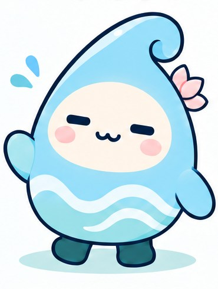
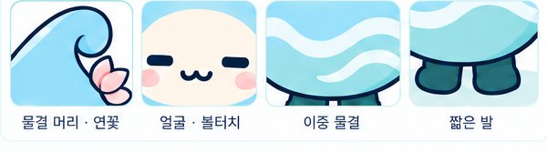
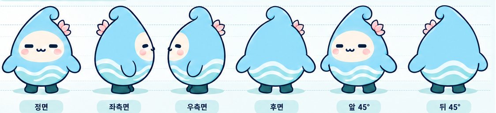
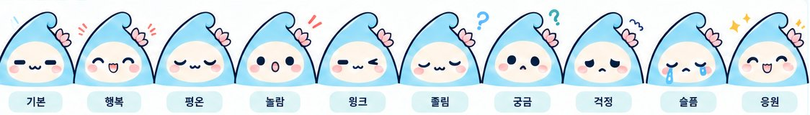
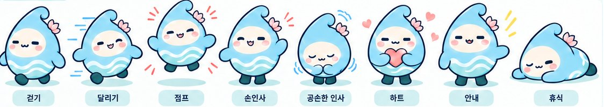
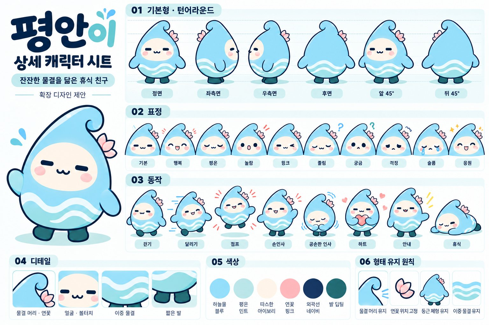

평안이
잔잔한 물결을 닮은 휴식 친구
양평의 '평'을 맡은 물방울입니다. 머리 끝은 파도가 말려 올라간 모양이고, 옆에는 연꽃 한 송이가 늘 붙어 있습니다. 서두르는 법이 없어서, 보고 있으면 숨이 한 박자 느려집니다.

여섯 가지 색
이름의 반쪽
평안이가 태어난 이야기
'평'을 맡을 친구
양평군에는 원래 양춘이가 있습니다. 그런데 양춘이는 '양평'의 '양'만 담고 있었죠. 그래서 '평'을 맡을 친구를 만들어 보았습니다.
모두의 평안을 바라며
둘이 나란히 서야 비로소 양평이 됩니다. 이름에는 양평군에 살고 지나는 모든 존재가 평안하기를 바라는 마음을 담았습니다. 사람만이 아닙니다.
- 사람
- 강물
- 나무
- 새
- 바람
공식 캐릭터는 아닙니다
평안이는 양평군의 공식 캐릭터가 아니라, 양평을 아끼는 마음으로 만든 비공식 창작 캐릭터입니다. 양평군이나 양춘이와는 공식적인 관계가 없습니다.
생김새
어떻게 그려도 평안이로 보이게 하는 것들
바뀌지 않는 네 가지
비율이나 각도는 장면에 따라 달라져도, 아래 넷은 그대로 둡니다. 이 넷이 흐트러지면 다른 캐릭터가 됩니다.
- 말려 올라간 물결 머리
- 오른쪽 머리에 고정된 연꽃
- 모서리 없는 둥근 체형
- 몸을 가로지르는 이중 물결




평안이의 하루
그림을 누르면 크게 볼 수 있습니다
책상 앞의 평안이
노트북을 열고, 키보드를 두드리고, 다 끝내면 두 팔을 번쩍 듭니다. 화면 앞에서도 서두르는 법은 없습니다.
가방을 메고 나서는 날
지도를 펼치고 쌍안경을 듭니다. 멀리 가지는 않지만 매번 처음 가는 길처럼 걷습니다.
풀밭과 물가에서
나비를 따라 달리고 강가에서 물장구를 칩니다. 물에서 온 친구라 물가에서 가장 즐거워 보입니다.
손을 보태는 시간
쓰레기를 줍고, 밥을 나누고, 마을을 쓸었습니다. 크게 티 내지 않고 조용히 합니다.
앉아서 쉬는 쪽
차 한 잔, 케이크 한 입, 국수 한 그릇. 평안이가 제일 잘하는 일입니다.
하루의 끝은
대체로 여기입니다.
캐릭터 시트
위의 모든 설정이 한 장에 들어 있습니다
